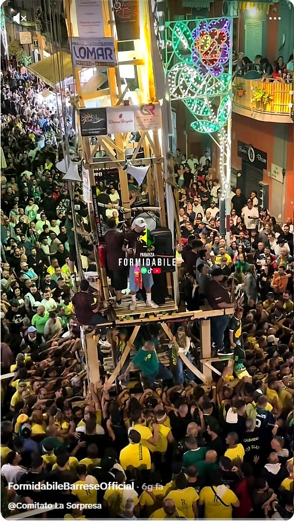
1983
Nasce La Formidabile
Raffaele Maddaluno, “Lello ’O Cavallaro”, fonda la paranza. Comincia una storia giallo-verde destinata a diventare tradizione.
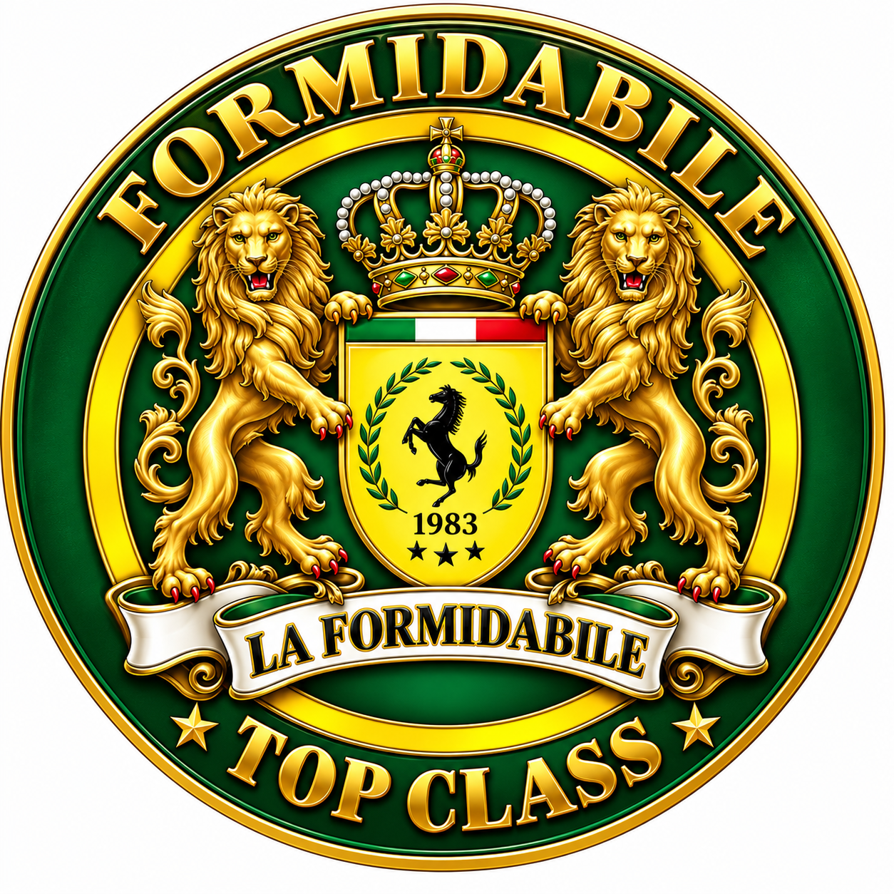
BARRA · NAPOLI · DAL 1983
Una storia. Due colori. Una sola passione.
SCOPRI LA NOSTRA STORIA ↓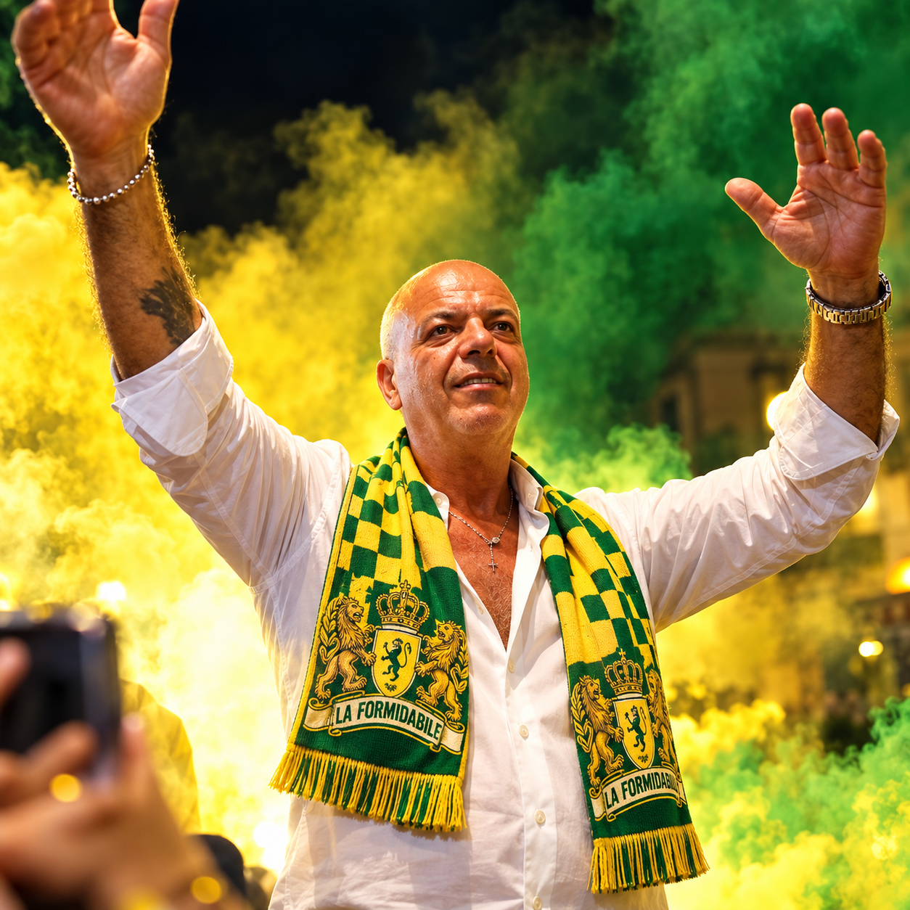
1983 — DOVE TUTTO HA INIZIO
Fondatore della Paranza Barrese La Formidabile.
Da Barra nasce una storia destinata ad attraversare generazioni. Una passione fatta di uomini, musica, appartenenza e di quei colori che, dal 1983, raccontano un nome inconfondibile.
NON SI GUARDA.
DAL 1983 AD OGGI

Raffaele Maddaluno, “Lello ’O Cavallaro”, fonda la paranza. Comincia una storia giallo-verde destinata a diventare tradizione.
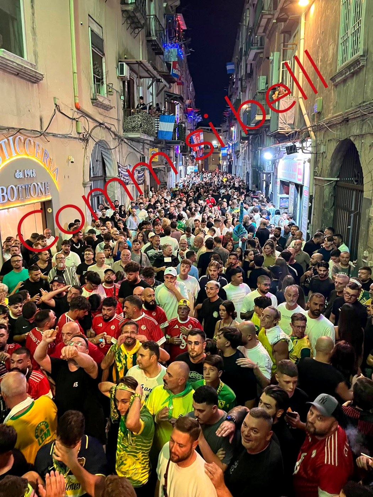
Una nuova stagione di festa, musica e appartenenza. La Formidabile consolida il suo nome nel cuore di Barra.
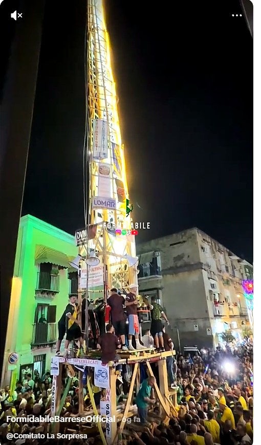
La tradizione passa di spalla in spalla. Volti, voci e generazioni diverse continuano a ritrovarsi sotto gli stessi colori.
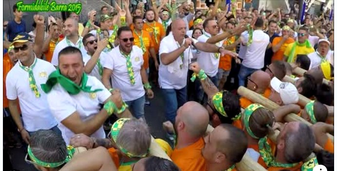
La storia continua tra grandi giornate di festa, musica e un’identità sempre più riconoscibile: giallo, verde, Formidabile.
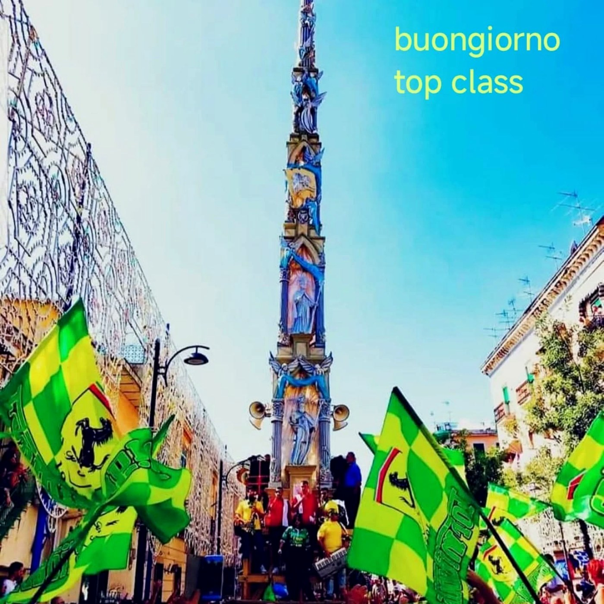
Il passato diventa memoria e il presente prepara il futuro. La Formidabile guarda già alla prossima grande festa.
IL PROSSIMO CAPITOLO
La Formidabile guarda avanti. Un nuovo anno da costruire insieme, un nuovo Giglio da vivere, una nuova pagina da aggiungere a una storia iniziata nel 1983. Questa sarà la sezione viva del sito: preparativi, appuntamenti, prove, protagonisti, musica e dietro le quinte fino al giorno della Festa.
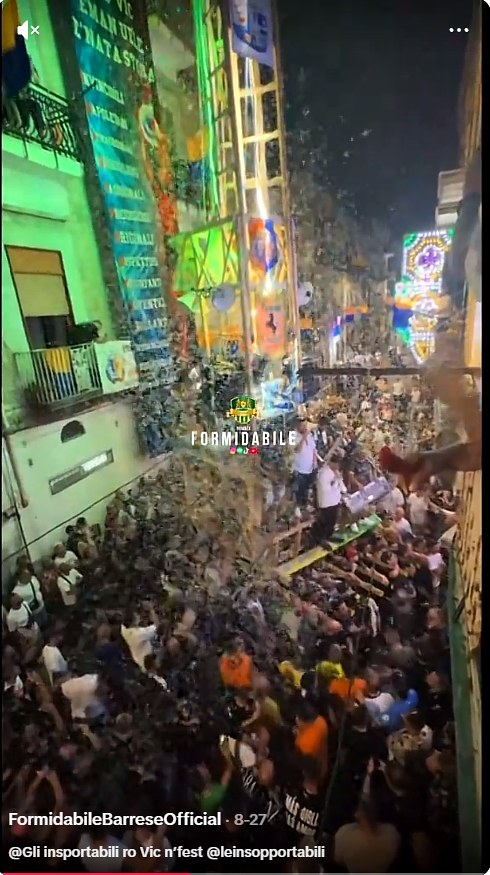
INSIEME NEL 2027
Una nuova avventura prende forma. La Formidabile – Top Class sarà ancora una volta al fianco del Comitato La Sorpresa per accompagnare il cammino verso la Festa 2027.
Testi, nomi, programma e contenuti ufficiali saranno inseriti nella versione definitiva.
VERSO IL 2027
Volti, storia e protagonisti del Comitato La Sorpresa.
Foto, aggiornamenti e backstage dei mesi che precedono la Festa.
Prove, appuntamenti e momenti della paranza verso il grande giorno.
Foto, video e racconto in tempo reale dell’edizione 2027.
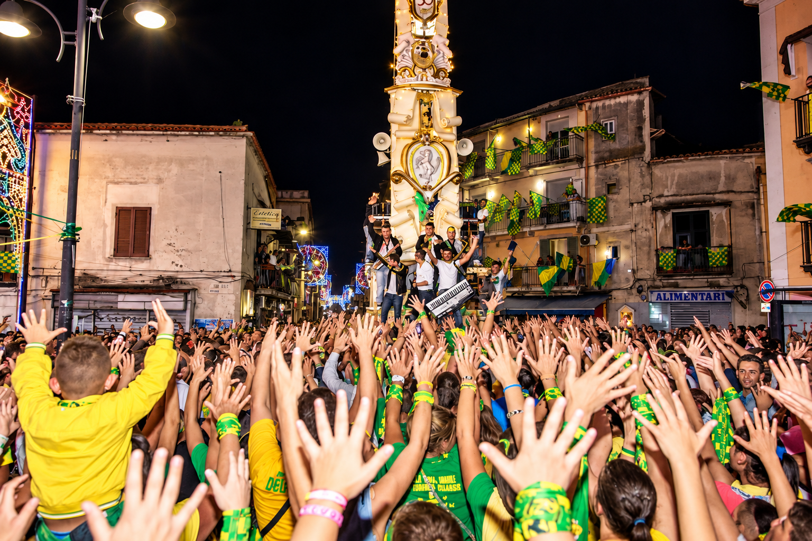
BARRA · LA FESTA
Quando il Giglio incontra la strada, Barra diventa voce, ritmo e movimento. La Formidabile è lì, dentro la sua gente.
ARCHIVIO VISIVO
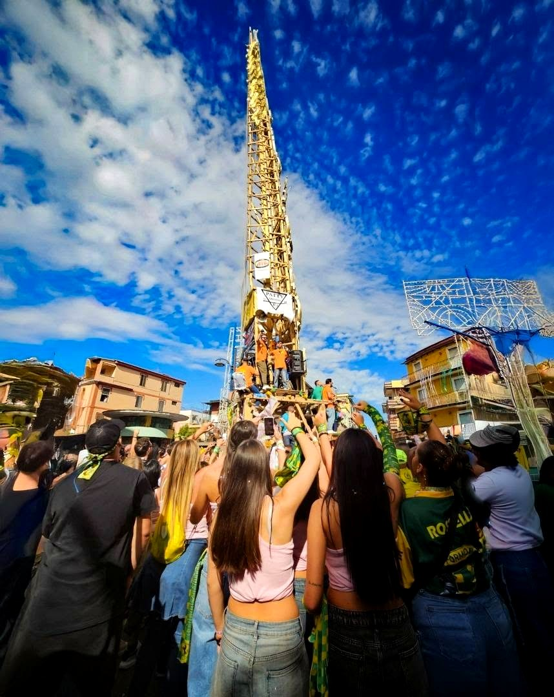
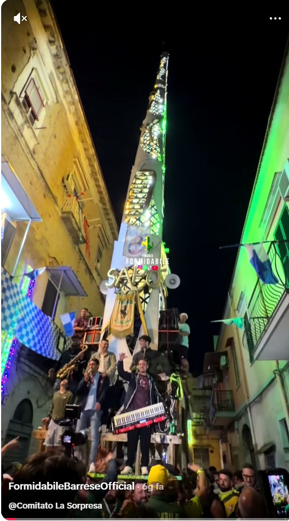
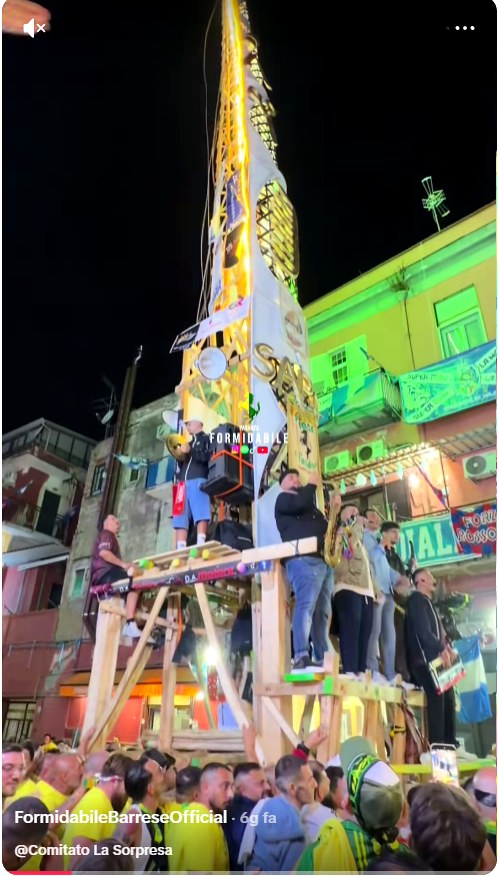
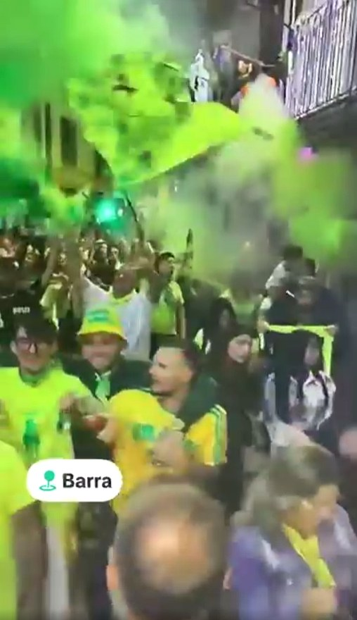
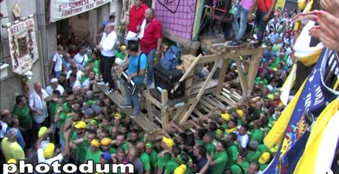
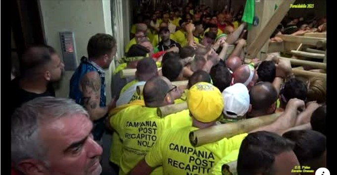
DAL 1983